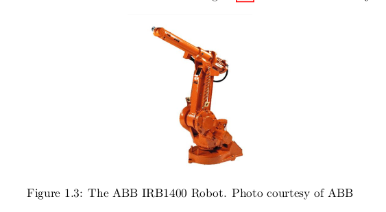
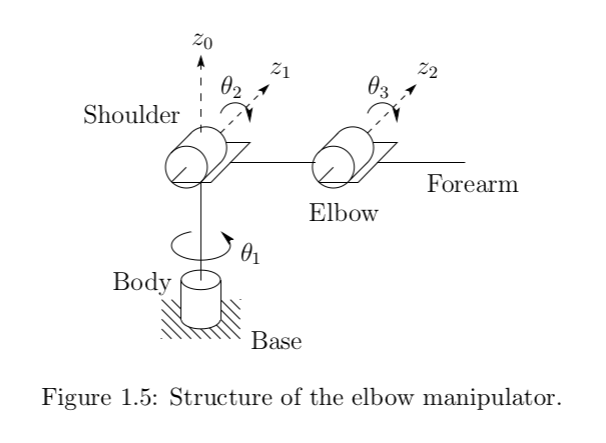
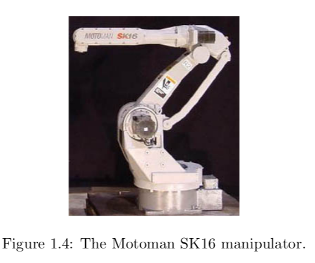
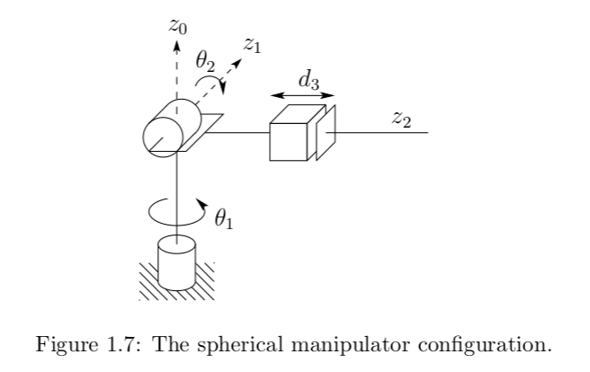
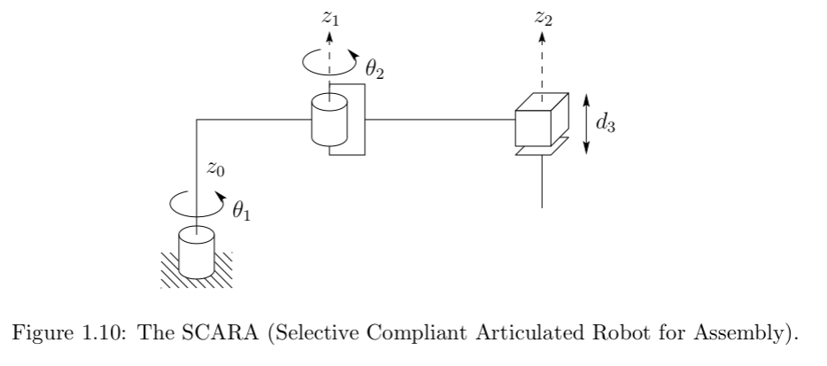
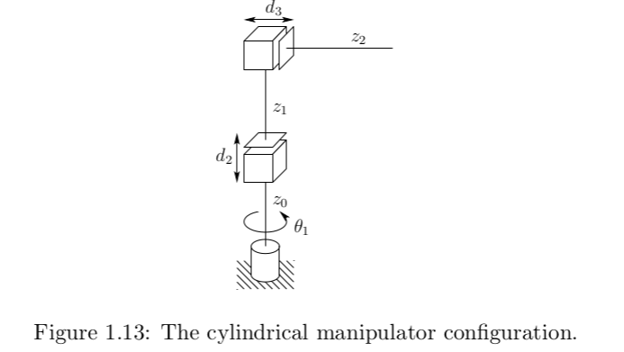
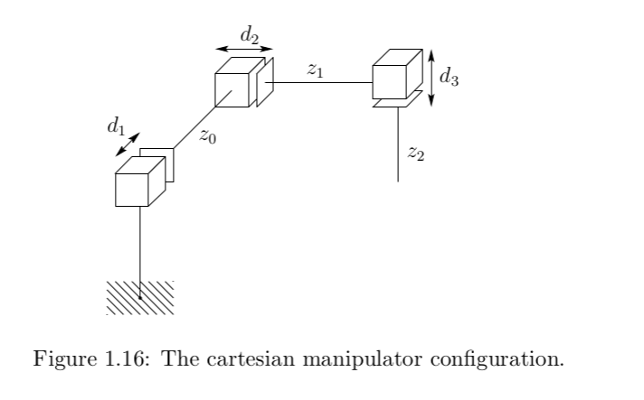
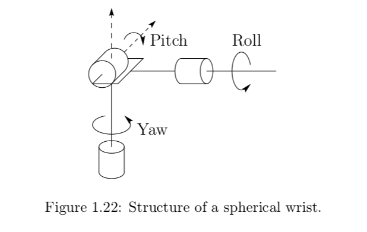

flowchart LR
B[Power Source]
B --> B1[Hydraulics\n e.g. Atlas]
B --> B2[Electrical\n e.g. UR]
B --> B3[Pnuematics] --- B3N[[Note: Air is compressible\nso not very precise,\n hence not popular]]
Chapter 1: Robot Modeling and Control (spong)
Last updated: 2025-08-30
1.1 History
The very first robots (or so called non-servo robots) didn’t have any feedback in place. They were basically issued sequence of commands, .e.g. Move to point A, Close gripper, Move to point B, usually with hard mechanical stops or limit switches but there wasn’t any real feedback
1.2 Components and Structure of robots
1.2.1 Symbolic representation of robots
Basically robots are kinematic chains, which are made up of links and joints. These joints can be revolute (R), or prismatic (P). The axis of rotation, or axis of translation is denoted by z
1.2.2 Degrees of freedom and workspace
Degrees of freedom
So actually, when we talk about degrees of freedom for a kinematic mechanism, (think four bar linkage) the degrees of freedom doesn’t directly equate to the number of joints, and is given by the Gruebler’s formula,
\[ F = 3 (n - 1) - 2L - H \]
where:
- \(F\) = number of degrees of freedom
- \(n\) = total number of links including the fixed base
- \(L\) = total number of lower pairs (1 DOF such as pins and sliding joints)
- \(H\) = total number of higher pairs (2 DOF such as cam and gear joints)
You can refer here for more details: source
Having said that, for a lot of the industrial manipulators, they are designed in a way that the joints are mostly independent of each other and thus number of degrees of freedom == number of joints. For a robot to reach 3D space with arbitrary orientation, it must have atleast 6DOFs i.e. 3 for position and 3 for orientation. If a robot has more than 6 DOF, then its called a kinematically redundant chain – which is especially useful if we have to avoid obstacles.
Workspace
Okay, with that out of the way, lets talk of workspace. So by definition, its the total volume swept by the end effector as it executes all possible motions. The shape of this volume depends on the robot geometry and the limits on the joints (for example a revolute joint might have less than 360 degree rotation). Its often broken down into 1. reachable workspace –> Entire set of points we can physically reach 2. dextorous workspace –> Subset of the workspace, where we can reach with arbitrary orientation
1.2.3 Classification of robots
flowchart LR
C[Application area]
C --> C1[Assembly]
C --> C2[Non-Assembly]
flowchart LR
D[Method of control]
D --> D1[Servo]
D --> D2[Non-Servo]
flowchart LR
E[Geometry]
E --> E1[Articulate RRR]
E --> E2[spherical RRP]
E --> E3[SCARA RRP]
E --> E4[Cylindrical RPP]
E --> E5[Cartesian PPP]
1.2.4 Common Kinematic Arrangements
Articulated RRR
Elbow configuration
 
Parallelogram configuration

Spherical RRP

SCARA RRP

Cylindrical RPP

Cartesian PPP

1.2.4 Wrist and End effectors
So far we have discussed the different kinematic configurations of a robot, and what they are typically describing is a Robot ARM. For the robot to do anything meaningful we need an end effector / hand / EoAT (end of arm tooling). Typically these EoATs are grippers, but also can be more complex depending on the need of the task. So a wrist then is anything that comes between the ARM and the EoAT
One interesting thing to note is that:
- The ARM is usally responsible for the positional degrees of freedom
- The WRIST typically deals with the orientational degrees of freedom
Wrists are also typically spherical, by that I mean, the roll/pitch/yaw axes all intersect at the same point. Here’s a synbolic representation of a wrist
